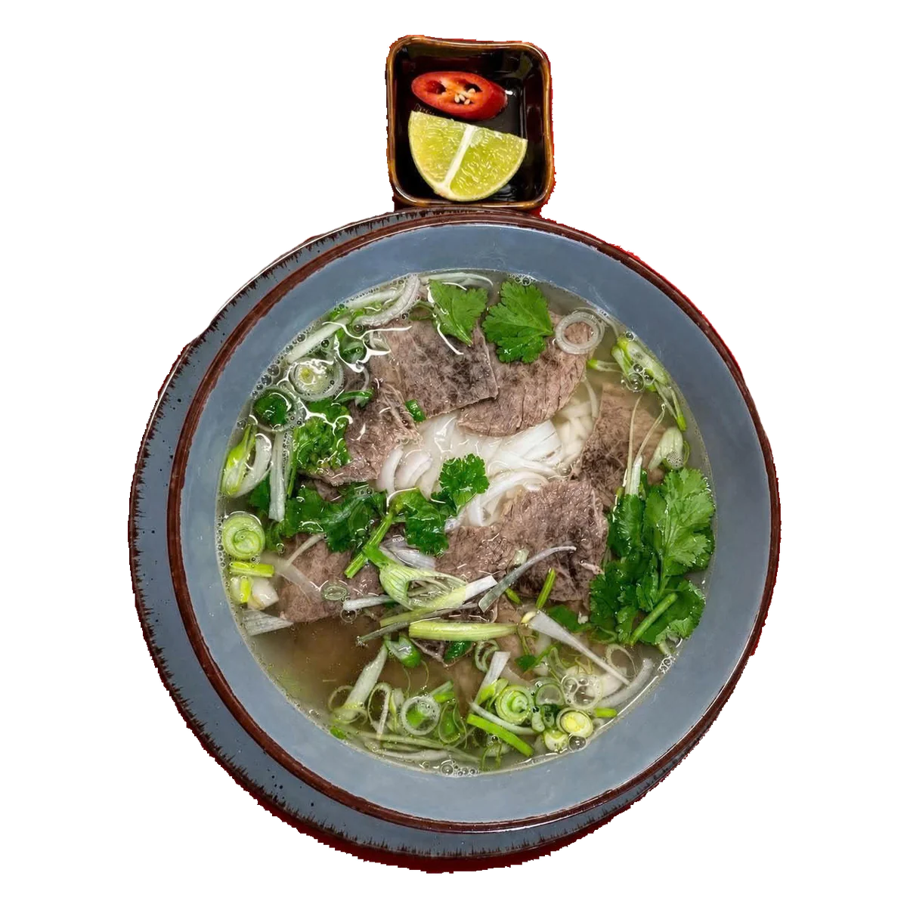
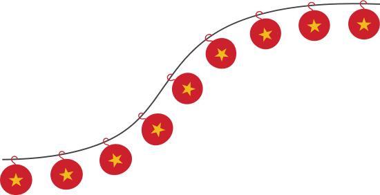
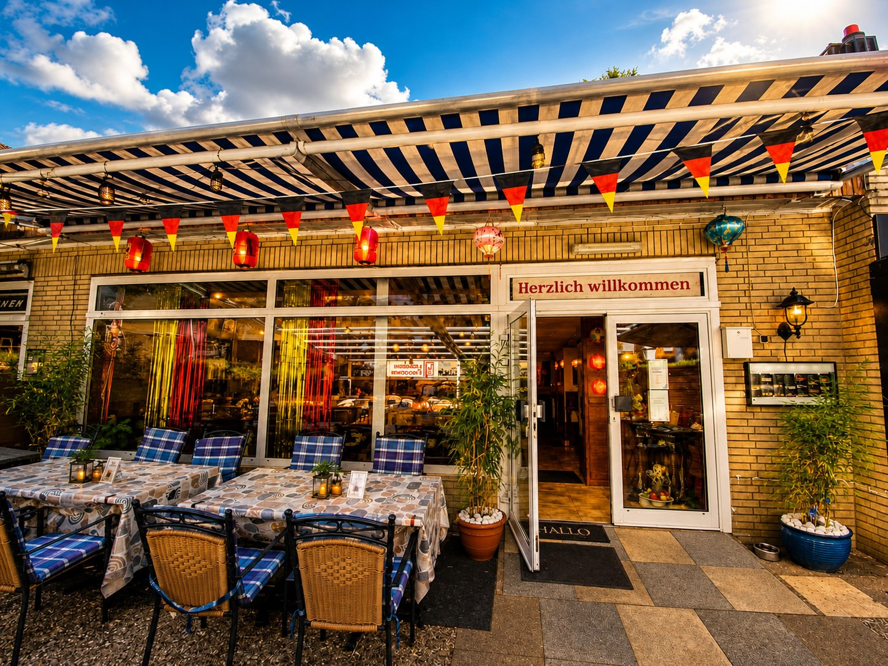
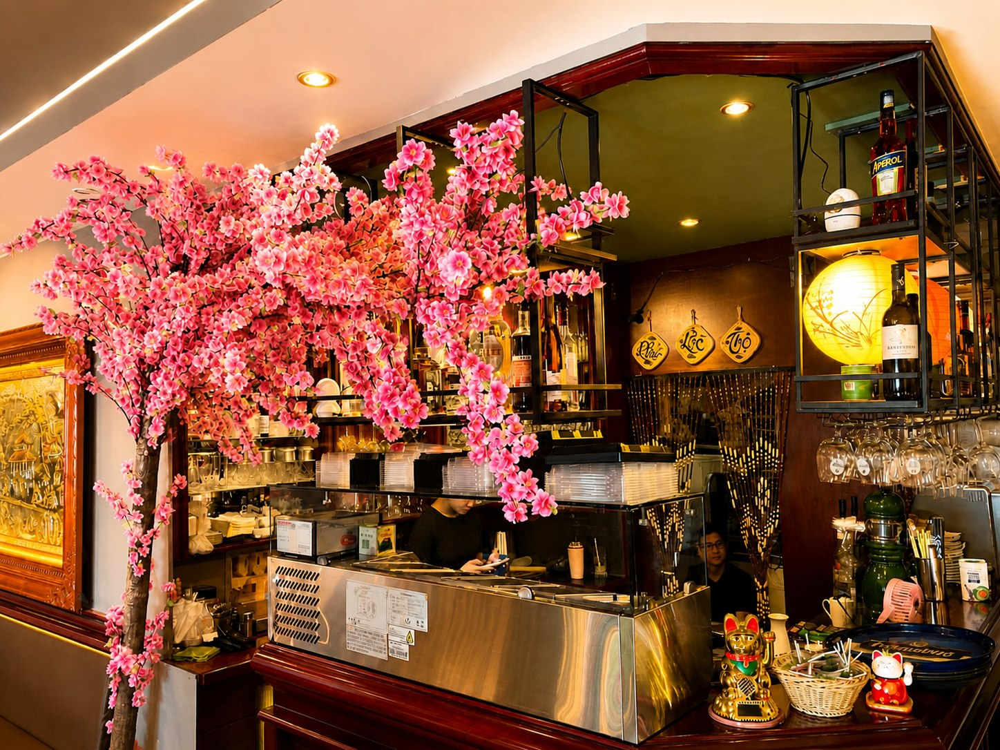
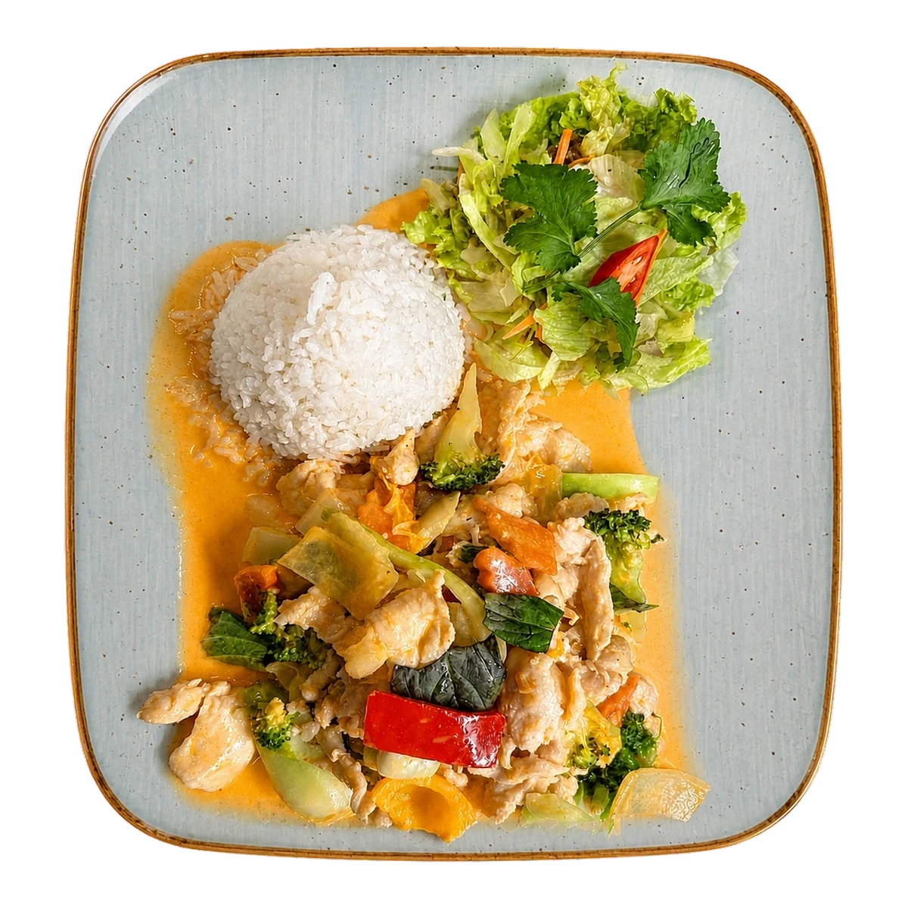
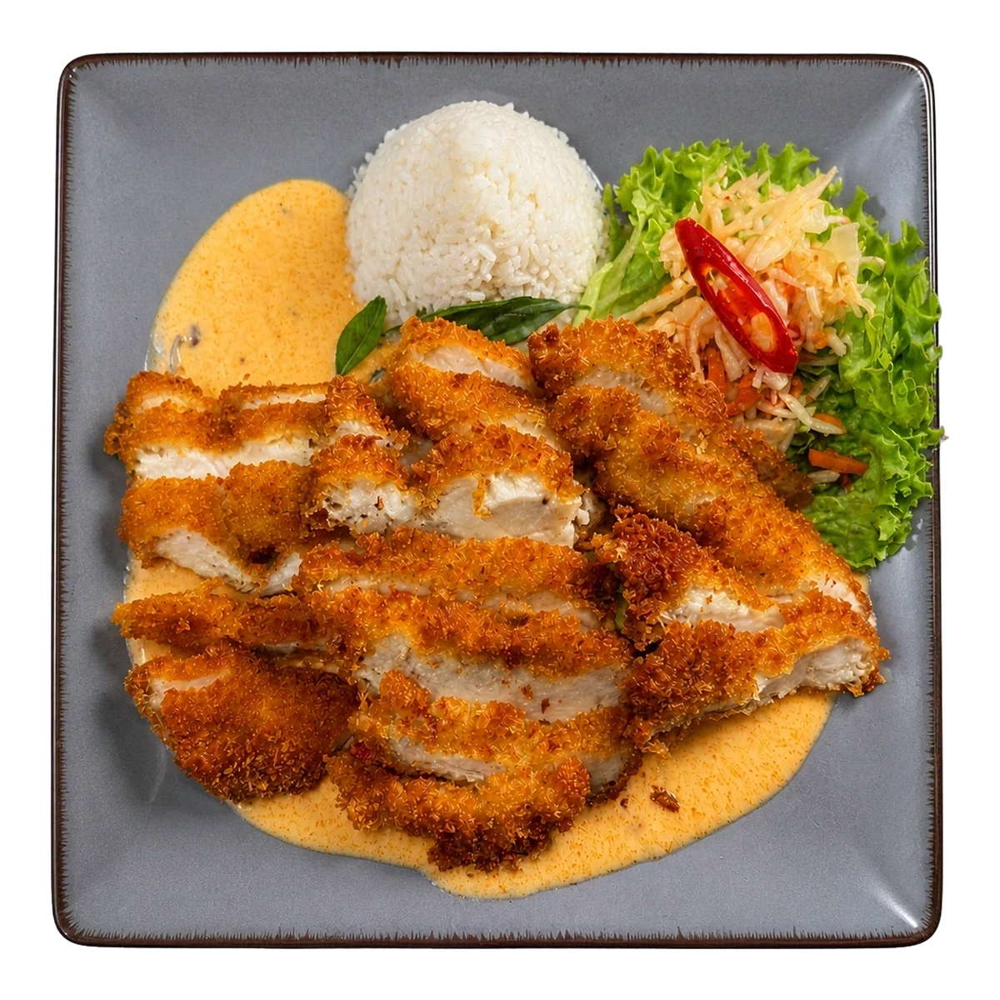
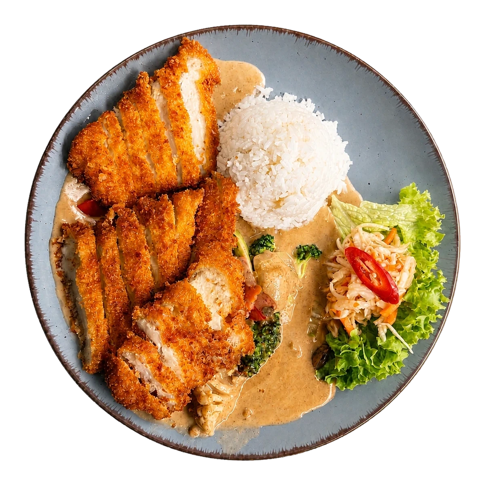
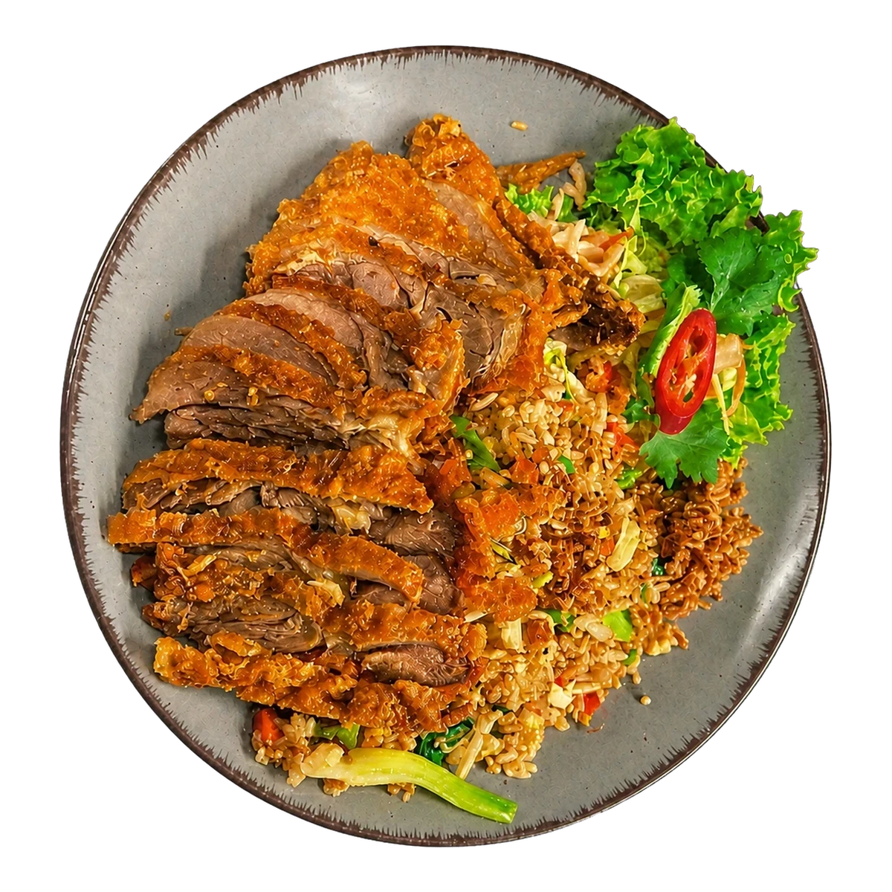
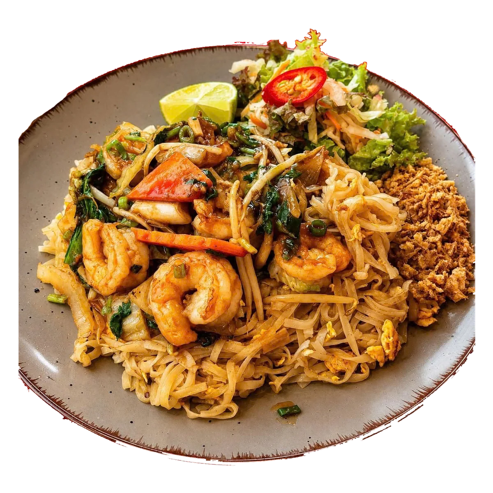

Phở Bò
Rinderbrühe · Reisbandnudeln

Willkommen in unserem Restaurant
In einem lebendigen Viertel ist ein Restaurant nicht nur ein Ort zum Essen. Es ist auch ein Treffpunkt für Nachbarn, Familien und Freunde.


Unser Haus
Unsere Küche verbindet vietnamesische Rezepte mit Einflüssen aus ganz Asien. Kräuter, Zitrus, feine Schärfe und sorgfältig gekochte Brühen stehen im Mittelpunkt – klar, aromatisch und ohne Umwege.
Eine Auswahl
Jedes Gericht bekommt denselben Raum. Kleine Unterschiede bleiben bewusst erhalten, ohne dass ein Teller den anderen überlagert.

Rinderbrühe · Reisbandnudeln

Kokosmilch · Thai-Basilikum

Panierte Hähnchenbrust · Currysoße

Cremige Erdnuss-Soße · mild

Gebratener Reis · knusprige Ente

Tamarinde · Garnelen · Erdnüsse
Atmosphäre
Warme Lichter, Holz und ein Hauch von Indochina.
Besuchen Sie uns
Besuchen Sie uns in der Bekassinenau 67. Wir freuen uns darauf, Sie bei uns willkommen zu heißen.